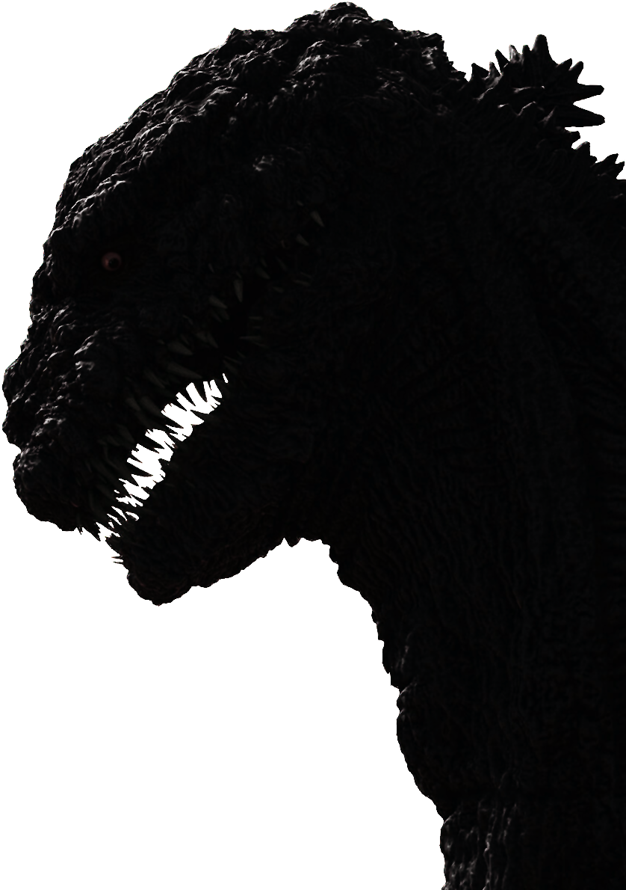
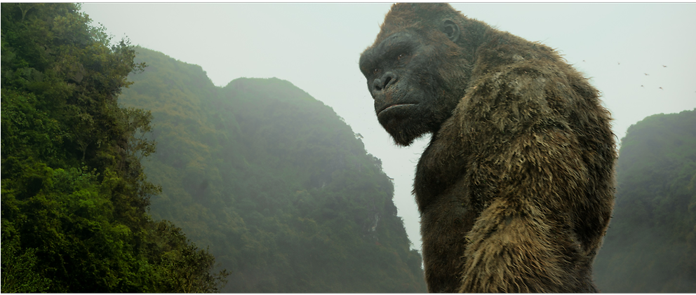

Godzilla
Es un ícono de la cultura japonesa. Este legendario e irrefrenable monstruo, sinónimo de destrucción de ciudades enteras (en especial Tokyo) es también, paradójicamente, símbolo de poder y resistencia frente a los ataques de poderosos enemigos extranjeros. puede describirse como un dinosaurio gigante de piel gruesa y escamas en la espalda y cola, que cuenta con un poderoso rayo azul que sale de su boca destruyendo todo lo que toca, una resistencia increíble.
Saber más King Kong
King Kong es el nombre de un gigantesco gorila ficticio que habita en la Isla Calavera, y que ha sido el protagonista de varias películas, además de haber aparecido en otros medios, como series de televisión, libros, videojuegos o cómics, habiéndose convertido por ello en uno de los iconos de la cultura popular moderna. La película en la que este simio gigante apareció por primera vez (King Kong, 1933) es una de las primeras y más famosas películas de monstruos.
Saber más 